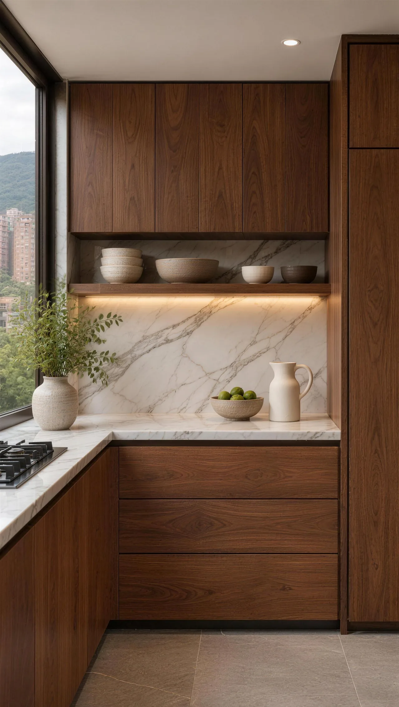
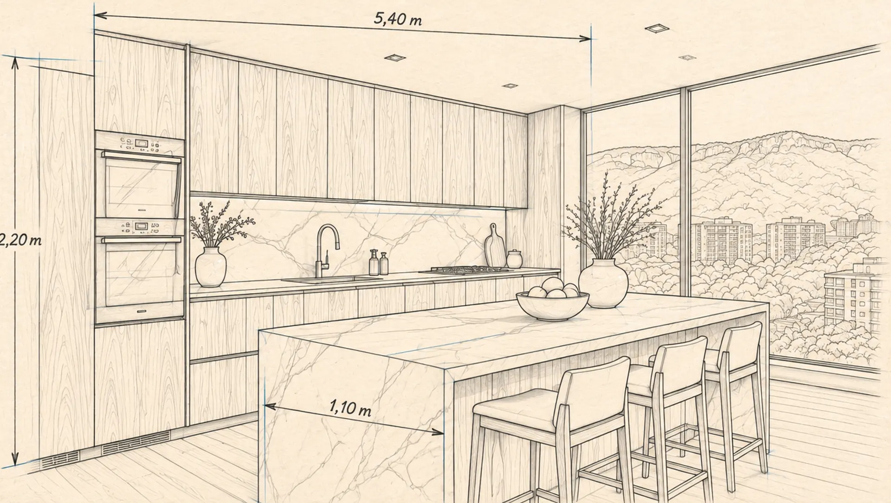
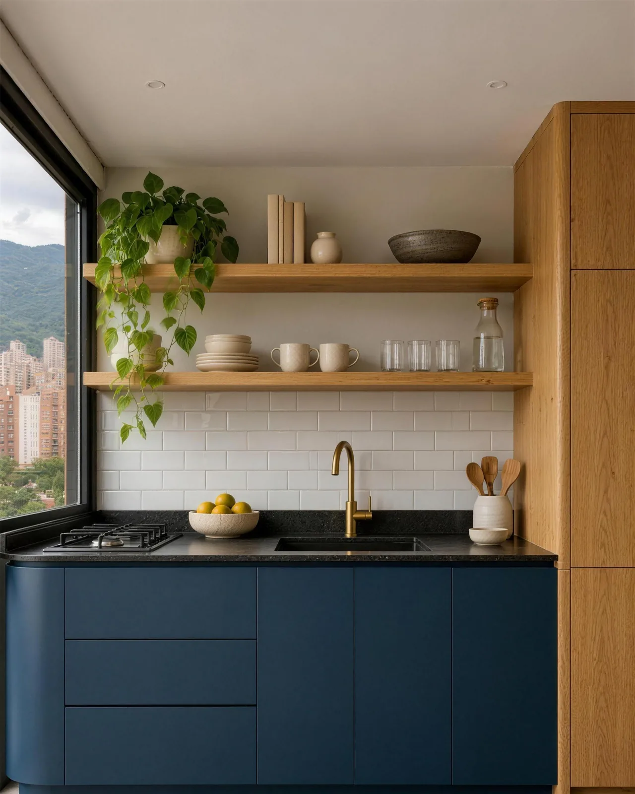
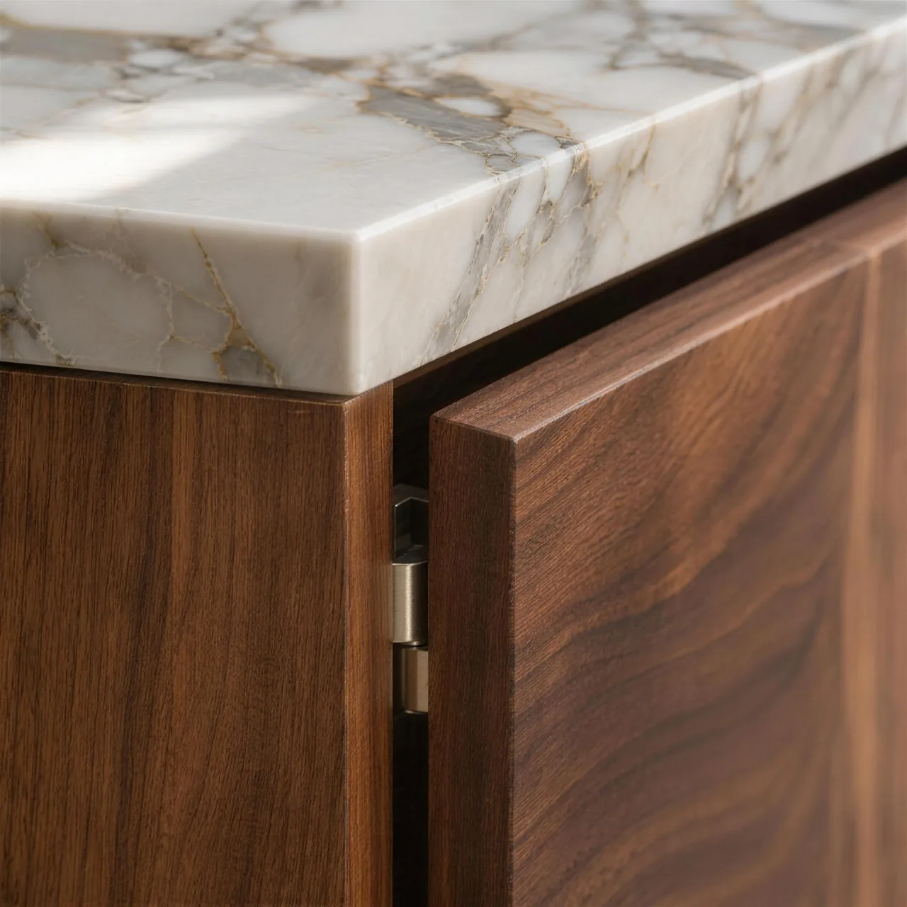

Cocinas a la medida
Cocinas integrales para apartamentos en Bogotá, con mesón en mármol, granito o cuarzo y muebles en chapilla de madera o lacado.
Cocinas desde $14.000.000IVA incluido. El valor final depende de las medidas y los materiales.

- Visita y medidas gratisVamos a tu apartamento sin costo
- Garantía de 1 añoEn todos los trabajos que hacemos
- Herrajes con cambio por 1 añoBisagras, correderas y manijas
- Cotización en máx. 7 días hábilesPor escrito y válida por 14 días
Qué incluye
Un solo equipo, del plano a la instalación.
- Visita, medidas y planoEn tu apartamento
- Muebles altos, bajos y torresChapilla o lacado
- Mesón e islaMármol, granito o cuarzo
- Herrajes con cierre lentoBisagras y correderas
- InstalaciónCon el piso protegido
Cocinas desde $14.000.000, IVA incluido. El valor final depende de las medidas y los materiales: te lo damos por escrito después de la visita, que es gratis.
Pide tu cotización
El plano
Toda cocina empieza en un plano.
Antes de cortar la primera pieza, dibujamos la cocina con las medidas reales del apartamento: dónde va cada mueble, cada electrodoméstico y cada toma.
- 1La isla queda a 1,10 m de los muebles para circular con comodidad.
- 2La torre de hornos va junto a la ventana, lejos del lavaplatos.
- 3La alacena aprovecha la esquina hasta el techo.
Del plano a la idea
Así se ve un plano terminado.
Desliza la línea: a la izquierda el plano con medidas, a la derecha cómo se vería la cocina terminada.

PlanoTerminada

Proyectos
Cocinas en fotos.
Cómo trabajamos
Así lo hacemos.
El plazo y el valor quedan por escrito antes de empezar.
- 1
Escríbenos
Por WhatsApp nos cuentas qué quieres hacer y en qué barrio.
- 2
Visita y medidas gratis
Vamos al apartamento sin costo, medimos y vemos el espacio contigo.
- 3
Plano y cotización
En máximo 7 días hábiles te enviamos el diseño, los materiales y el valor por escrito, válido por 14 días.
- 4
Fabricación
Cortamos y preparamos cada pieza según el plano aprobado.
- 5
Instalación y entrega
Instalamos, ajustamos y revisamos contigo antes de entregar.
Preguntas
Preguntas frecuentes
¿Trabajan con mármol natural?
Sí. Te mostramos las placas para que elijas la veta, y sellamos el mesón para el uso diario de cocina.
¿Puedo conservar mis electrodomésticos?
Sí. Medimos cada equipo y diseñamos los muebles para que encajen, o te asesoramos si vas a cambiarlos.
¿Cuánto se demora una cocina?
Depende del tamaño y del mesón. Te damos el plazo por escrito junto con la cotización.
¿La visita para medir tiene costo?
No. La visita y las medidas en tu apartamento son gratis.
¿Qué garantía dan?
Todos nuestros trabajos tienen garantía de 1 año. No cubre daños por mal uso de la carpintería ni daños causados por el cliente. Los herrajes (bisagras, correderas y manijas) tienen garantía de cambio por 1 año.
¿Cuándo recibo la cotización?
En máximo 7 días hábiles después de la visita te enviamos el diseño, los materiales y el valor por escrito. La cotización es válida por 14 días después de entregada.
¿Cuánto cuesta?
Cocinas desde $14.000.000, IVA incluido. El valor final depende de las medidas y los materiales que elijas; te lo damos por escrito después de la visita.
Otros servicios
Cotización por proyecto
¿Lo hacemos en tu apartamento?
Cuéntanos qué quieres hacer y en qué barrio queda el apartamento. Te respondemos por WhatsApp y agendamos la visita gratis para medir.
También por correo: andokcarpinteria@gmail.com